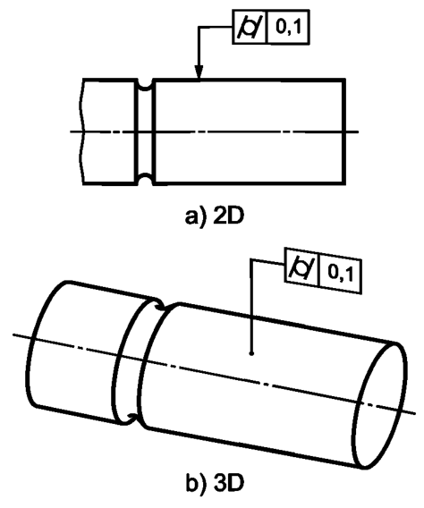

Выявленная нормируемая цилиндрическая поверхность должна располагаться между двумя соосными цилиндрами, разность радиусов которых равна 0,1, см. рисунок ниже.
Поле допуска ограничено двумя соосными цилиндрами, разность радиусов которых равна значению допуска t, см. рисунок ниже